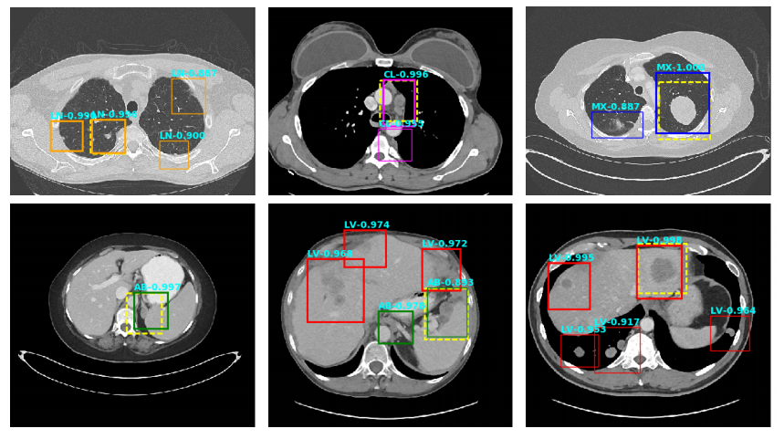
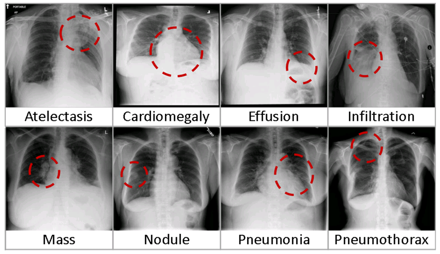
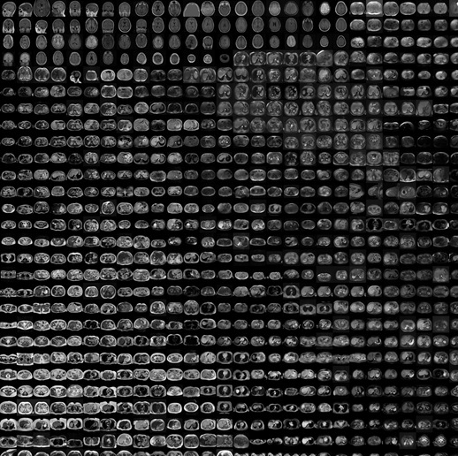
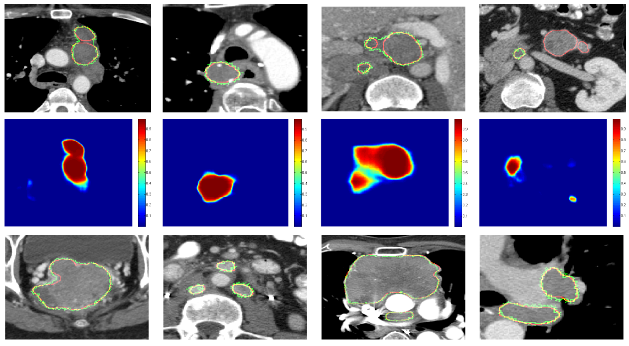
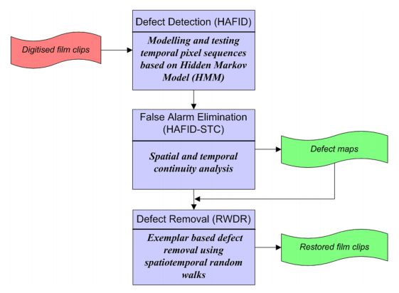
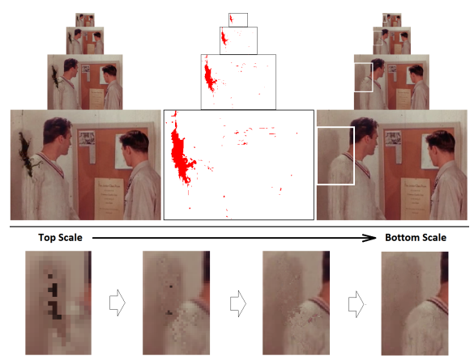
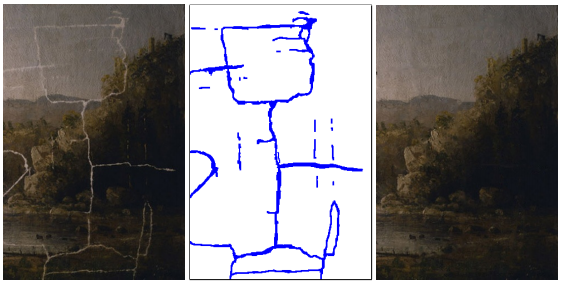
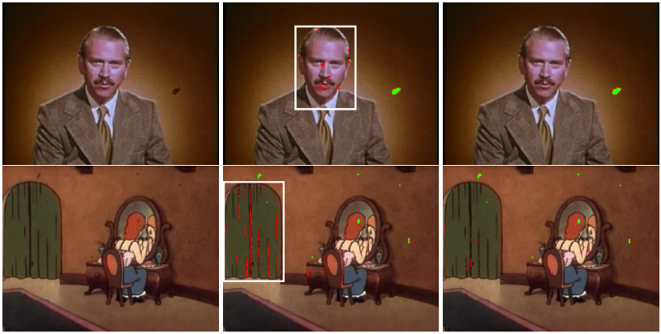
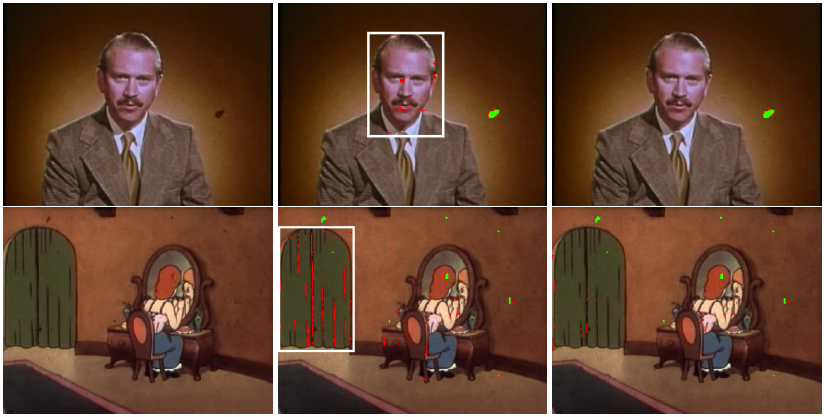

Projects
X. Wang, Y. Peng, L. Lu, Z. Lu, R. M. Summers.
TieNet: Text-Image Embedding Network for Common Thorax Disease Classification and Reporting in Chest X-rays.
IEEE CVPR 2018; arXiv:1801.04334, 2018
[PDF]

K. Yan*, X. Wang*, L. Lu, R. M. Summers.
DeepLesion: Automated Deep Mining, Categorization and Detection of Significant Radiology Image Findings using Large-Scale Clinical Lesion Annotations
arXiv:1710.01766; RSNA, 2017; IEEE CVPR 2018
[PDF] [Data]

X. Wang, Y. Peng, L. Lu, Z. Lu, M. Bagheri, R. M. Summers.
ChestX-ray8: Hospital-scale Chest X-ray Database and Benchmarks on Weakly-Supervised Classification and Localization of Common Thorax Diseases.
IEEE CVPR (spotlight); arXiv:1705.02315, 2017

X. Wang, L. Lu, H. Shin, L. Kim, M. Bagheri, I. Nogues, J. Yao, R. M. Summers.
Unsupervised Joint Mining of Deep Features and Image Labels for Large-scale Radiology Image Categorization and Scene Recognition.
IEEE WACV; arXiv:1701.06599; arXiv:1603.07965; RSNA
2016
Winner
of 2016 RSNA Trainee Research Award
[PDF] [Data]

I. Nogues, L. Lu, X. Wang, H. Roth, G. Bertasius, N. Lay, J. Shi, Y. Tsehay, R. M. Summers.
Automatic Lymph Node Cluster Segmentation using Holistically-Nested Networks and Structured Optimization.
MICCAI, 2016
[PDF]

X. Wang and M. Mirmehdi.
Archive Film Defect Detection and Removal: an Automatic Restoration Framework.
IEEE Transactions on Imaging Processing (T-IP), 2012
[PDF] [PhD Thesis]

X. Wang and M. Mirmehdi.
Archive Film Restoration based on Spatiotemporal Random Walks.
European Conference on Computer Vision (ECCV), 2010
[PDF]
 

X. Wang and M. Mirmehdi.
HMM based Archive Film Defect Detection with Spatial and Temporal constraints.
British
Machine Vision Conference (BMVC), 2009
Winner of the Best Industrial Paper Prize
[PDF]
Last update: Sep. 2017